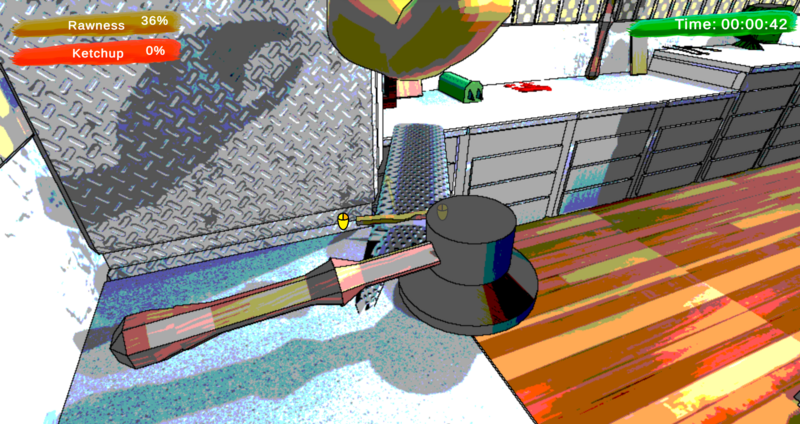
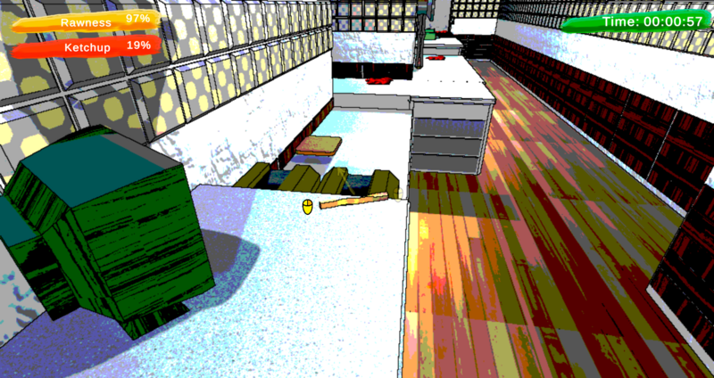

Overview
Amazing run for your life from retired master chef. Will you fry, or fly ?
Link to Project page GGJScreenshots




Responsibilities
Developed a post-processing effects using dithering combined with G-Buffer normal and depth textures outline effect. Implemented ray-marched ketchup to achieve a visual effect where fries appear to eat the ketchup. Worked on core gameplay mechanics.
What I Learned
How to write outline shader properly and how to optimize raymarching algorithm to be not that performant heavy.